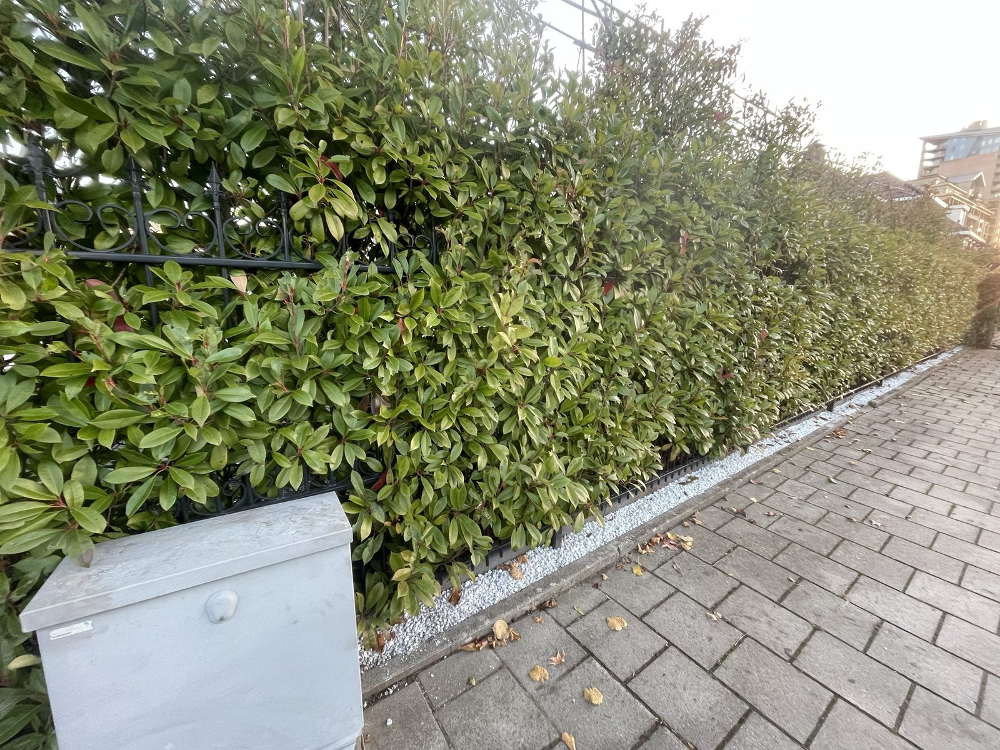

Snoeiwerk · Tuinonderhoud
Haag langs smeedijzeren hekwerk gesnoeid
Voor deze klant hebben wij de haag langs het smeedijzeren hekwerk aan de stoeprand gesnoeid.
Uitgevoerde werkzaamheden
- Haag over de volle lengte langs het hekwerk en de stoep in model gesnoeid
Resultaat
Een dichte, strakke groene haag die netjes aansluit op de stoep. Langs de onderkant ligt een strook witte split.
Foto's
Dit project in beeld
Heeft u een vergelijkbaar project?
Vertel ons wat u wilt laten doen. U ontvangt een duidelijk voorstel, vooraf afgestemd op uw situatie.